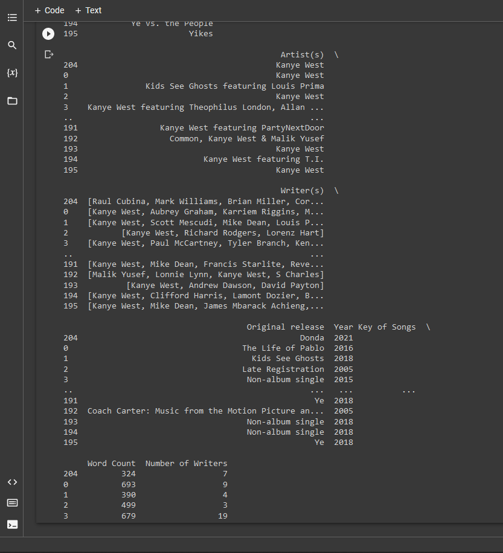

What We Are Doing
In this website, various aspects of Kanye's Wests discography will be analyzed, including album sales, average words per minute, release date, and more. Additionally, Kanye West's performance over time will be compared to that of Lil Wayne to see if trends in his popularity are reflective of hip hop in general or just a trend in Kanye's own music.
Our Database
In order to analyze our data, we had three dataframes with our information. We had three main dataframe:
- The first dataframe was a list of all the songs and had song specific information.
- This is what it would look like in spread sheet form

- The second dataframe was a list of all the albums and had album specific information including a list of the songs that were in the album.
- The third dataframe was a list of the top 20 Kanye songs and the information on their lyrics and popularity.



Within the total songs dataframe, we had information on the song name, writers that worked on it, artists that worked on it, original relase, the year of release, and word count.
Within the total albums dataframe, we had information on albums names, album length, album US chart peak, album sales in the first week, RCAA rating, and words per minute.
Within the top 20 dataframe, we had information on the song, views on Genius in millions, and a count of all the words for each song.
Our information on Lil Wayne would be stored in a smaller dataframe with release date, album sales, and album name.
Our Sources
In order to get the amount of information we needed on Kanye and Lil Wayne, we gathered data from a variety of sources. We used Genius for information on lyric view counts and the lyrics.ovh API for the lyrics of every song. We also scraped some of our information directly from wikipedia pages, turning HTML tables on the list of songs and albums into JSON files. We got information on RIAA rating, writers, release date, rating charts, and sales.